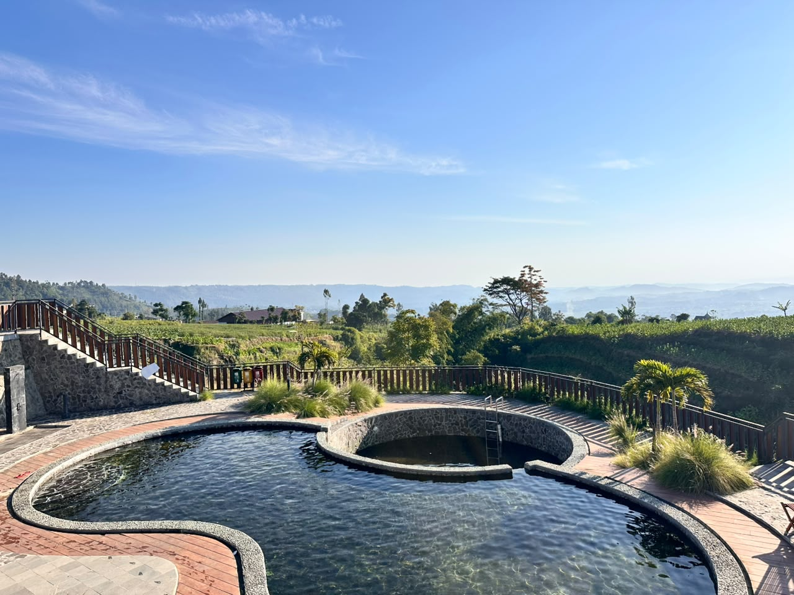

Penanda awal mula aliran Kali Progo, sungai besar yang bermuara hingga Samudra Hindia.
Titik 0 KM Kali Progo berada tak jauh dari kawasan Umbul Jumprit, menandai pertemuan aliran-aliran mata air kecil dari lereng Gunung Sindoro yang kemudian menyatu menjadi awal aliran Kali Progo. Dari titik inilah, sungai yang membentang sejauh lebih dari 140 kilometer ini memulai perjalanannya.
Kali Progo dikenal sebagai salah satu sungai besar dan penting di Pulau Jawa, mengalir melintasi wilayah Temanggung, Magelang, Kulon Progo, hingga akhirnya bermuara di Samudra Hindia, Yogyakarta. Keberadaan titik nol kilometer ini menjadikannya penanda penting secara hidrologis sekaligus daya tarik edukatif bagi pengunjung yang ingin memahami perjalanan sebuah sungai dari hulunya.
Kawasan ini kini ditata sebagai spot wisata edukasi dengan penanda titik nol yang menjadi lokasi favorit untuk berfoto sekaligus belajar mengenai pentingnya menjaga kelestarian daerah aliran sungai (DAS).

Kompleks Wisata Umbul Jumprit, Desa Tegalrejo, Kecamatan Ngadirejo, Kabupaten Temanggung, Provinsi Jawa Tengah
Rp5.000/orang
0813-9345-1886
Hubungi pengelola untuk pertanyaan jadwal kunjungan, reservasi rombongan, atau info lain seputar Titik 0 KM Kali Progo.